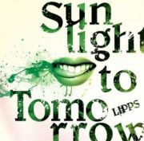

LIPPS / 1st MA [Sunlight to Tomorrow] 2017.10.18 ON SALE!

2007年小学校5年のときに坊ちゃん(g)とRYOTA(g/vo)を中心に広島で結成されたLIPPS(リップス)。
2012年HIROKI(b)が加入、高校時代にはすでにヤマハ Music Revolution や MASH A&R マンスリーオーディション、島村楽器 HOTLINE などのコンテストを突破・受賞を果たす。
その後、2015年に大阪に拠点を移すとKORESHO(dr)が加入し現メンバーとなる。
アグレッシブなロックサウンドに日本語・英語が入り混じる歌詞、高音域の歌声、高揚感のあるコーラスを織り交ぜ、発するメッセージは明日に向かうポジティブなものが多い。
アルバムタイトル『Sunlight to Tomorrow』には「明日への日差し」という意味が込められている。
広島では高校時代に数々のオーディション受賞歴を持ち、大阪バンドシーンで際立つ存在となり、この度1stミニアルバムを全国に放つ！
<収録曲>
1.「My Dream」
2.「Beginning of Summer」
3.「Scissors」
4.「Smile」
5.「Show Down」
6.「Tomorrow」
DLCR-17101 / 定価:¥1,324(税込)